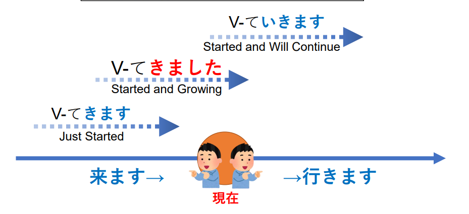

文型1
電子書籍が増えてきました。
愈來愈 / 開始Verb (趨勢)
「動詞て」＋「きました／いきます」用來表示「某時段裡，動作的持續」。

例１）
タバコを吸う人が減ってきた。
例２）
京子：最近、料理を習う男性が増えてきたそうですよ。
ワン：そうですね。私が通っている料理教室にも男の人がいますよ。
例３）
Ａ：もう日本の生活に慣れましたか。
Ｂ：ええ、もう三月日本にいるので、だんだん慣れてきましたよ。
例４）
良子：ラフルさん、日本語の勉強はどうですか。
ラフル：だんだん難しくなってきました。
⁂）海外に住んでいる日本人の数がだんだん増えてきました。
これからも増えていくだろうと思います。
文型２
たくさんの人が電子書籍を読むようになりました。
變得 / 開始Verb (變化)
動詞-辞書形 ＋ ようになる
動詞可能形・可能動詞 ＋ ようになる
例１）
本田：日本語が上手になりましたね。
リー：ありがとうございます。日本へ来た時はぜんぜん日本語が話せませんでしたが、
最近は少し話せるようになりました。
例２）
科学技術が進んで、宇宙で生活できるようになりました。
例３）
幸子：チンさんはよく野球を見ますか。
チン：前は全然見ませんでしたが、野球が好きな友達がてきて、よく見るようになりました。
例４）
以前は子供はよく外で遊びましたが、最近は家の中で遊ぶようになります。
文型３
前はよく紙の本を読みましたが、最近は読まなくなりました。
變得不...
例１）
フランスに住んでいた時はフランス語が話せましたが、最近は話せなくなりました。
例２）
姉は去年結婚して北海道へ行ったので、あまり会えなくなりました。
例３）
国ではよくスポーツをしましたが、日本へ来てからはしなくなりました。
例４）
サラ：日本ではお正月に着物を着るんですか。
山田：昔はよく来ましたが、今はあまり着なくなりました。
文型４
紙の本は、デザインがきれいだし、大きさもいろいろあるし、見るのが楽しいです。
…し：不單只…還有…
以 || …し…し，結論 || 組成
基本体＋し
例１）
ワン：東京は、美術館や博物館が多いし、いろいろな国の映画も見られるし、とても文化的な都市ですね。
チン：そうですね。
例２）
ラフル：リーさんはスパートに住んでいますね。門限がないからいいですね。
リー：ええ。でも、一人暮らしはお金がかかるし、夜寂しいし、よくないこともありますよ。
例３）
田中：山本さん、この辺にいい寿司屋はありませんか。
山本：北口の朝日寿司はどうですか。魚が新鮮だし、値段も高くないし、おすすめですよ。
例４）
リー：チンさん、北海道のホームステイはどうですか。
チン：お父さんもお母さんも優しなったし、景色もきれいだったし、最高でした。
本文１
電子書籍が増えてきました。
（テレビのニュース）
日本では２０１０年ごろから電子書籍が増えてきました。電子書籍が日本でできたのは１９８５年ですが、
そのころはあまり売れませんでした。しかし、２０１０年ごろから、電子書籍が読める機器が普及してきたので、
たくさんの人が電子書籍を読むようになりました。
電子書籍には、紙の本にはないメリットがいろいろあります。まず、電子書籍は本屋へ行かなくても買えます。
まだ、たくさんの本を保存して持ち運べるので、電車の中や喫茶店などで、好きな本を選んで読むこともできます。
このように電子書籍は便利なので、利用する人が増えてきました。
しかし、紙の本のほうが好きだと考えている人もいます。その理由は「本屋でいろいろな本を見て選ぶのが楽しい。」
「本棚に並べて楽しむことができる。」などです。
では、電子書籍と紙の本とどちらのほうが人気があるのでしょうか。伊藤記者が街でインタビューしました。